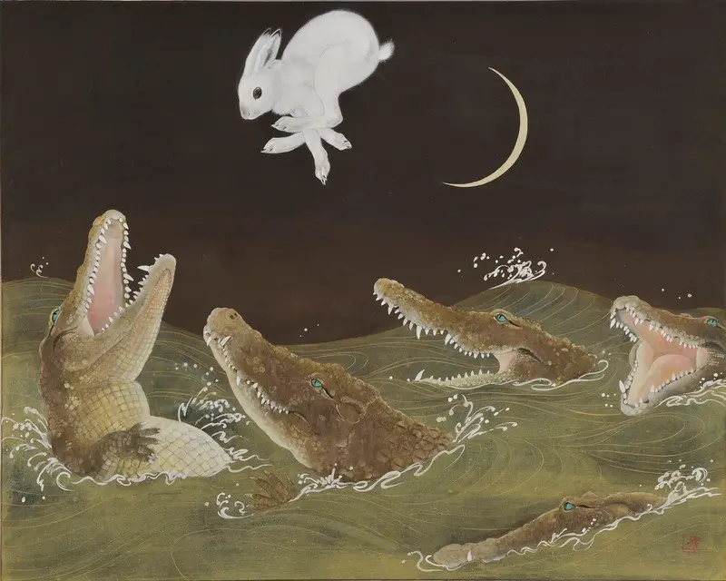

"While the Right represents an obdurate obstacle to economic reorganization and large-scale social redistribution, it is actual- ly the liberal PMC that stands in the way of the political revo- lution necessary to forge a different kind of society and world, one in which the dignity of ordinary people and the working class takes center stage."
"The neoliberal theory of technological change relies upon the coercive powers of competition to drive the search for new products, new production methods, and new organizational forms. This drive becomes so deeply embedded in entrepreneurial common sense, however, that it becomes a fetish belief: that there is a technological fix for each and every problem. To the degree that this takes hold not only within corporations but also within the state apparatus (in the military in particular), it produces powerful independent trends of technological change that can become destabilizing, if not counterproductive. Technological developments can run amok as sectors dedicated solely to technological innovation create new products and new ways of doing things that as yet have no market (new pharmaceutical products are produced, for which new illnesses are then invented). Talented interlopers can, furthermore, mobilize technological innovations to undermine dominant social relations and institutions; they can, through their activities, even reshape common sense to their own pecuniary advantage. There is an inner connection, therefore, between technological dynamism, instability, dissolution of social solidarities, environmental degradation, deindustrialization, rapid shifts in time–space relations, speculative bubbles, and the general tendency towards crisis formation within capitalism."